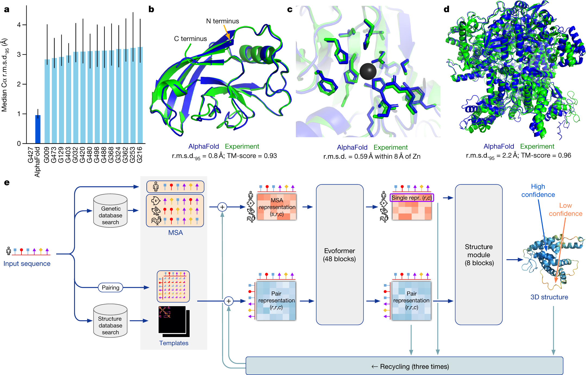
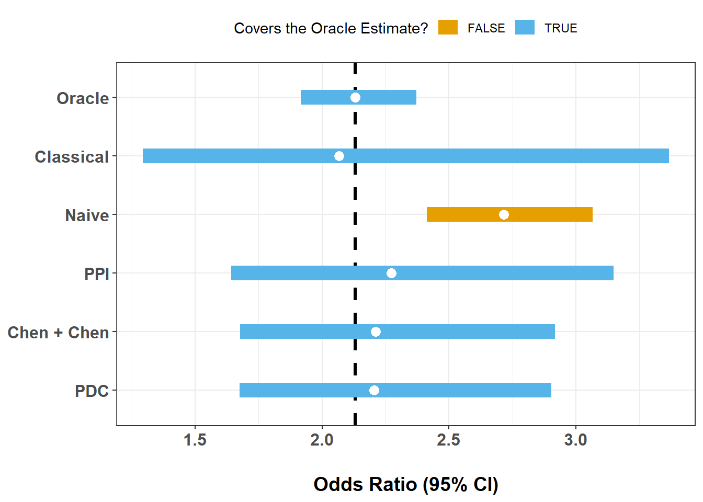
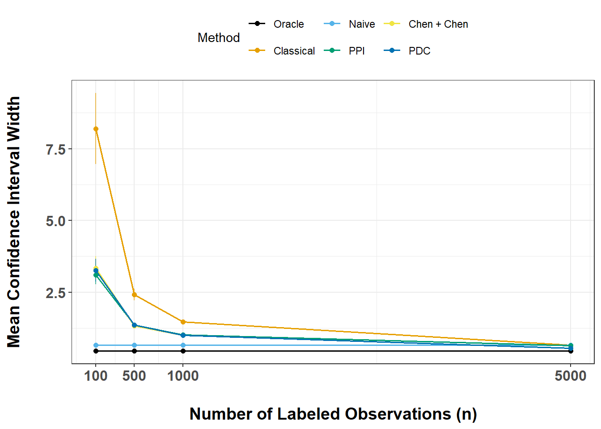
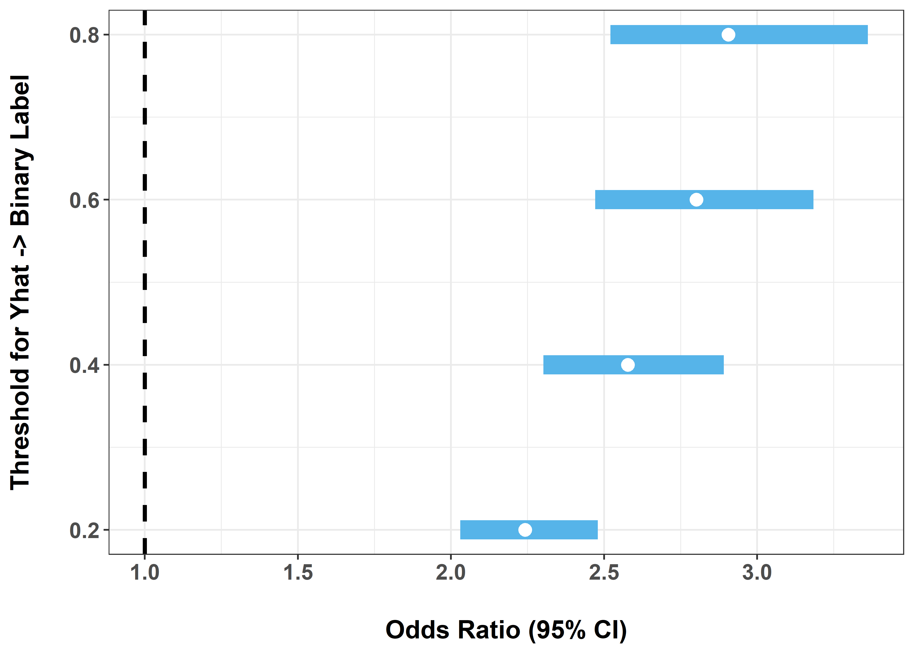

Code
# Install these packages if you have not already:
# install.packages(c("ipd", "broom", "tidyverse", "future", "furrr"))
library(ipd)
library(broom)
library(tidyverse)
library(future)
library(furrr)Protein Disorder and PTMs
Apply IPD methods in a proteomics setting to estimate associations when key outcomes are model-predicted rather than directly measured.

Modern protein biology increasingly relies on machine learning predictions.
AlphaFold, developed by Google DeepMind, predicts a protein’s 3D structure from its amino acid sequence with remarkably high accuracy. These predictions have transformed structural biology by providing proteome-scale annotations that would be impossible to obtain experimentally at the same scale.
At the same time, many downstream biological questions remain fundamentally inferential rather than predictive. For example, we may want to ask whether post-translational modifications (PTMs) occur more often in intrinsically disordered regions (IDRs), or whether certain PTMs are associated with different structural environments. In settings like this, model predictions are useful, but they are not the same thing as directly observed truth.
This module uses the ipd package to study that problem. We will combine AlphaFold-derived predictions with a limited amount of ground truth and ask how different inferential strategies behave.
By the end of this module, you will be able to:
AlphaFold predictions can be post-processed to identify intrinsically disordered regions (IDRs), that is, stretches of a protein that do not adopt a stable folded structure.
IDRs are central to signaling and regulation. They are flexible, accessible, and often enriched for short linear motifs. Many post-translational modifications, especially phosphorylation, ubiquitination, and acetylation, are hypothesized to occur preferentially in disordered regions, consistent with the idea that structural disorder supports rapid and dynamic regulation.
In this workshop, each amino acid residue has:
Y: A binary ‘gold-standard’ disorder label,Yhat: A predicted probability of disorder derived from AlphaFold-based processing,phosphorylatedubiquitinatedacetylatedOur scientific question is:
Are residues with a given PTM more likely to lie in intrinsically disordered regions?
For a chosen PTM, Z:
Z = 1 if the residue carries that PTM,Y = 1 if the residue lies in an IDR.We summarize the association using an odds ratio from logistic regression:
\[ \text{OR} = \frac{\text{Odds}(Y = 1 \mid Z = 1)}{\text{Odds}(Y = 1 \mid Z = 0)}. \]
In practice, however, we may only observe Y on a labeled subset, while Yhat is available for all residues.
We will first load the packages needed for this module.
# Install these packages if you have not already:
# install.packages(c("ipd", "broom", "tidyverse", "future", "furrr"))
library(ipd)
library(broom)
library(tidyverse)
library(future)
library(furrr)We have included a file, alphafold.RData, containing a tibble named alphafold with columns:
YYhatphosphorylatedubiquitinatedacetylatedEach row corresponds to a single residue.
Before fitting any models, let us inspect the data.
Questions to answer:
This gives you basic biological context and sanity-checks the input.
load("data/alphafold.RData")
glimpse(alphafold)Rows: 10,802
Columns: 5
$ Y <dbl[1d]> <array[26]>
$ Yhat <dbl[1d]> <array[26]>
$ phosphorylated <dbl[1d]> <array[26]>
$ ubiquitinated <dbl[1d]> <array[26]>
$ acetylated <dbl[1d]> <array[26]>alphafold |>
summarise(
n = n(),
frac_disordered = mean(Y, na.rm = TRUE),
phosphorylated = sum(phosphorylated == 1),
ubiquitinated = sum(ubiquitinated == 1),
acetylated = sum(acetylated == 1)
)# A tibble: 1 × 5
n frac_disordered phosphorylated ubiquitinated acetylated
<int> <dbl> <int> <int> <int>
1 10802 0.177 6017 3738 1171We should observe that:
For illustration, we will analyze one PTM at a time. For a chosen PTM:
Z is its binary indicator,Y is the true disorder label,Yhat is the predicted disorder probability.Let us begin with phosphorylation. Create a working dataset with columns:
YYhatZ (phosphorylation indicator)This will be the working dataset for the rest of this module.
ptm <- "phosphorylated"
dat <- alphafold |>
transmute(
Y = as.integer(Y),
Yhat = as.numeric(Yhat),
Z = as.integer(.data[[ptm]])
)
dat |>
count(Z) |>
mutate(pct = n / sum(n) * 100)# A tibble: 2 × 3
Z n pct
<int> <int> <dbl>
1 0 4785 44.3
2 1 6017 55.7We have now defined our three core variables:
Y: true disorder,Yhat: predicted disorder,Z: PTM indicator.For phosphorylation, we should see that Z = 1 for a substantial fraction of residues.
In many real studies, only a subset of residues has trusted disorder labels. Here, because we have labels for all samples, we can artificially create a partially labeled setting by:
n_labeled residues,Y,Y in the remaining rows.Write a function that:
n_labeled residues,"labeled",Y = NA for all others,set_label.make_split <- function(dat, n_labeled, seed = NULL) {
if (!is.null(seed)) set.seed(seed)
idx <- sample.int(nrow(dat), size = n_labeled, replace = FALSE)
labeled <- dat[idx, ] |>
mutate(set_label = "labeled")
unlabeled <- dat[-idx, ] |>
mutate(Y = NA_integer_, set_label = "unlabeled")
bind_rows(labeled, unlabeled)
}This creates a realistic experimental setting:
This mirrors many modern biological workflows where experimental validation is expensive and sparse, but predictions are readily available.
We now compare several approaches to estimating the same PTM–disorder odds ratio:
Oracle logistic regression: uses Y for all residues
Classical logistic regression: uses Y only in the labeled subset
Naive logistic regression: thresholds Yhat and treats it as truth
IPD methods:
The oracle is included as a benchmark, but in practice it is usually unavailable.
With n_labeled = 500:
alpha <- 0.05
stacked <- make_split(dat = dat, n_labeled = 500, seed = 123)
fit_oracle <- glm(Y ~ Z, data = dat, family = binomial())
fit_classical <- glm(Y ~ Z, data = filter(stacked, set_label == "labeled"),
family = binomial())
fit_naive <- glm(I(Yhat > 0.5) ~ Z, data = stacked, family = binomial())
fit_ppi <- ipd(Y - I(Yhat > 0.5) ~ Z, method = "ppi", model = "logistic",
data = stacked, label = "set_label")
fit_chen <- ipd(Y - I(Yhat > 0.5) ~ Z, method = "chen", model = "logistic",
data = stacked, label = "set_label")
fit_pdc <- ipd(Y - I(Yhat > 0.5) ~ Z, method = "pdc", model = "logistic",
data = stacked, label = "set_label")
ex4_results <- bind_rows(
tidy(fit_oracle, conf.int = TRUE) |> mutate(Method = "Oracle"),
tidy(fit_classical, conf.int = TRUE) |> mutate(Method = "Classical"),
tidy(fit_naive, conf.int = TRUE) |> mutate(Method = "Naive"),
tidy(fit_ppi) |> mutate(Method = "PPI"),
tidy(fit_chen) |> mutate(Method = "Chen + Chen"),
tidy(fit_pdc) |> mutate(Method = "PDC")) |>
filter(term == "Z") |>
mutate(
Method = factor(Method) |>
fct_relevel("Oracle", "Classical", "Naive", "PPI", "Chen + Chen", "PDC"),
OR = exp(estimate),
LCL = exp(conf.low),
UCL = exp(conf.high)) |>
select(Method, OR, LCL, UCL)
glimpse(ex4_results)Rows: 6
Columns: 4
$ Method <fct> Oracle, Classical, Naive, PPI, Chen + Chen, PDC
$ OR <dbl> 2.130875, 2.066667, 2.716635, 2.272798, 2.211696, 2.204858
$ LCL <dbl> 1.916754, 1.292530, 2.412201, 1.640979, 1.676679, 1.674278
$ UCL <dbl> 2.371509, 3.366292, 3.065175, 3.147884, 2.917434, 2.903580oracle_est <- ex4_results |> filter(Method == "Oracle") |> pull(OR)
ex4_results |>
mutate(covers = if_else((LCL <= oracle_est) & (UCL >= oracle_est), T, F)) |>
ggplot(aes(x = OR, xmin = LCL, xmax = UCL, y = Method, color = covers)) +
theme_bw() +
geom_vline(xintercept = oracle_est, linetype = 2, linewidth = 1.1) +
geom_linerange(linewidth = 5) +
geom_point(size = 3, color = "white") +
scale_y_discrete(limits = rev) +
scale_color_manual(values = palette.colors(4)[2:3]) +
labs(
x = "Odds Ratio (95% CI)",
y = NULL,
color = "Covers the Oracle Estimate?") +
theme(
legend.position = "top",
axis.text = element_text(face = "bold", size = 12),
axis.title.x = element_text(face = "bold", size = 14,
margin = margin(t = 20, unit = "pt")))
This single-split comparison illustrates several common patterns:
We should see:
Yhat were poorly calibrated?We now study how uncertainty changes as the number of labeled observations increases.
For each n in {100, 500, 1000, 5000}:
We will store everything in a single results table for now so that we can inspect and plot these results in later exercises.
ns <- c(100, 500, 1000, 5000)
num_trials <- 20
fit_oracle <- glm(Y ~ Z, data = dat, family = binomial())
run_one <- function(n, t, fit_oracle) {
s <- make_split(dat, n, seed = 1000 + n + t)
fit_classical <- glm(Y ~ Z, data = filter(s, set_label == "labeled"),
family = binomial())
fit_naive <- glm(I(Yhat > 0.5) ~ Z, data = s, family = binomial())
fit_ppi <- ipd(Y - I(Yhat > 0.5) ~ Z, method = "ppi",
model = "logistic", data = s, label = "set_label")
fit_chen <- ipd(Y - I(Yhat > 0.5) ~ Z, method = "chen",
model = "logistic", data = s, label = "set_label")
fit_pdc <- ipd(Y - I(Yhat > 0.5) ~ Z, method = "pdc",
model = "logistic", data = s, label = "set_label")
results <- bind_rows(
tidy(fit_oracle, conf.int = TRUE) |> mutate(Method = "Oracle"),
tidy(fit_classical, conf.int = TRUE) |> mutate(Method = "Classical"),
tidy(fit_naive, conf.int = TRUE) |> mutate(Method = "Naive"),
tidy(fit_ppi) |> mutate(Method = "PPI"),
tidy(fit_chen) |> mutate(Method = "Chen + Chen"),
tidy(fit_pdc) |> mutate(Method = "PDC")) |>
filter(term == "Z") |>
mutate(
Method = factor(Method) |>
fct_relevel("Oracle", "Classical", "Naive", "PPI", "Chen + Chen", "PDC"),
OR = exp(estimate),
LCL = exp(conf.low),
UCL = exp(conf.high),
n = n,
trial = t,
width = UCL - LCL) |>
select(Method, OR, LCL, UCL, n, trial, width)
}
ex5_grid <- crossing(n = ns, trial = 1:num_trials)
old_plan <- future::plan()
future::plan(future::multisession,
workers = max(1, parallel::detectCores() - 1))
ex5_results <- ex5_grid |>
mutate(out = furrr::future_map2(n, trial,
\(n, trial) run_one(n, trial, fit_oracle))) |>
select(out) |>
unnest(out)
future::plan(old_plan)
glimpse(ex5_results)Rows: 480
Columns: 7
$ Method <fct> Oracle, Classical, Naive, PPI, Chen + Chen, PDC, Oracle, Classi…
$ OR <dbl> 2.130875, 2.730000, 2.716635, 1.805772, 1.727755, 1.718718, 2.1…
$ LCL <dbl> 1.9167544, 0.9364931, 2.4122014, 0.9914139, 0.9271172, 0.925140…
$ UCL <dbl> 2.371509, 9.148324, 3.065175, 3.289053, 3.219807, 3.193022, 2.3…
$ n <dbl> 100, 100, 100, 100, 100, 100, 100, 100, 100, 100, 100, 100, 100…
$ trial <int> 1, 1, 1, 1, 1, 1, 2, 2, 2, 2, 2, 2, 3, 3, 3, 3, 3, 3, 4, 4, 4, …
$ width <dbl> 0.4547542, 8.2118304, 0.6529739, 2.2976393, 2.2926900, 2.267882…This table stores repeated confidence intervals across several labeled sample sizes. It lets us compare methods in terms of statistical efficiency.
In general, we expect:
n increases,n is small?Now summarize the repeated experiments by plotting the mean interval width against the number of labeled observations.
ex6_results <- ex5_results |>
group_by(Method, n) |>
summarise(
mn = mean(width, na.rm = TRUE),
se = sd(width, na.rm = TRUE) / sqrt(sum(!is.na(width))),
.groups = "drop")
ex6_results |>
ggplot(aes(x = n, y = mn, group = Method, color = Method)) +
theme_bw() +
geom_line(linewidth = 0.6) +
geom_errorbar(
aes(ymin = mn - se, ymax = mn + se),
width = 0.2,
linewidth = 0.4,
alpha = 0.65) +
geom_point(size = 1.6) +
scale_x_continuous(breaks = ns) +
scale_color_manual(values = palette.colors(8)) +
labs(
x = "Number of Labeled Observations (n)",
y = "Mean Confidence Interval Width") +
theme(
legend.position = "top",
axis.text = element_text(face = "bold", size = 12),
axis.title.x = element_text(face = "bold", size = 14,
margin = margin(t = 20, unit = "pt")),
axis.title.y = element_text(face = "bold", size = 14,
margin = margin(r = 20, unit = "pt")))
This figure summarizes efficiency across methods:
This module illustrates how IPD can be used in a modern proteomics workflow:
In this AlphaFold/PTM example, we saw that:
A central lesson of this module is that large-scale biological prediction does not eliminate the need for statistics. AlphaFold and related systems make it possible to ask questions at a proteome-wide scale, but downstream scientific conclusions still depend on how we handle uncertainty, labeling limitations, and prediction error.
IPD provides one principled way to bridge that gap.
This is the end of the module. We hope this was informative. For questions, comments, or suggestions, please reach out to Stephen Salerno (ssalerno@fredhutch.org.
The exercises below are optional extensions for self-guided exploration.
These exercises go a bit beyond the main workflow. They are designed for participants who want to explore study design, sensitivity analyses, or biological extensions in more depth.
One practical question is how many labeled observations are needed to achieve adequate power.
Suppose we want to test
\[ H_0: \text{OR} \le 1 \]
and reject when the lower confidence bound exceeds 1.
We will estimate the smallest n_labeled such that:
alpha_pval <- 0.05
target_power <- 0.80
n_experiments <- 2
run_one_ci <- function(s, method = c("PPI", "Classical")) {
method <- match.arg(method)
if (method == "PPI") {
fit <- ipd(Y - Yhat ~ Z, method = "ppi", model = "logistic",
data = s, label = "set_label", alpha = alpha_pval)
tt <- tidy(fit) |> filter(term == "Z")
c(LCL = exp(tt$conf.low), UCL = exp(tt$conf.high))
} else {
lab <- s |> filter(set_label == "labeled")
m <- glm(Y ~ Z, data = lab, family = binomial())
tt <- tidy(m, conf.int = TRUE) |> filter(term == "Z")
c(LCL = exp(tt$conf.low), UCL = exp(tt$conf.high))
}
}
power_at_n <- function(n_labeled, method = c("PPI", "Classical")) {
method <- match.arg(method)
rej <- replicate(n_experiments, {
s <- make_split(dat, n_labeled = n_labeled)
ci <- run_one_ci(s, method = method)
if (method == "PPI") {
as.integer(ci[["LCL.Z"]] > 1)
} else {
as.integer(ci[["LCL"]] > 1)
}
})
mean(rej)
}
n_grid <- sort(unique(round(seq(50, 1200, by = 50))))
old_plan <- future::plan()
future::plan(future::multisession,
workers = max(1, parallel::detectCores() - 1))
power_methods <- c("PPI", "Classical")
power_tbl <- expand_grid(n = n_grid, Method = power_methods) |>
mutate(Power = furrr::future_map_dbl(
n, Method, \(n, Method) power_at_n(n_labeled = n, method = Method))) |>
arrange(Method, n)
future::plan(old_plan)
power_tbl
n80 <- power_tbl |>
group_by(Method) |>
filter(Power >= target_power) |>
summarise(n_for_80 = ifelse(n() == 0, NA_integer_, min(n)), .groups = "drop")
n80
power_tbl |>
ggplot(aes(x = n, y = Power, color = Method)) +
theme_bw() +
geom_hline(yintercept = target_power, linetype = 2) +
geom_line(linewidth = 1.1) +
geom_point(size = 2) +
scale_x_continuous(breaks = n_grid) +
scale_color_manual(values = palette.colors(3)[2:3]) +
labs(
x = "Number of Labeled Observations (n)",
y = "Estimated Power") +
theme(
legend.position = "top",
axis.text = element_text(face = "bold", size = 12),
axis.title.x = element_text(face = "bold", size = 14,
margin = margin(t = 20, unit = "pt")),
axis.title.y = element_text(face = "bold", size = 14,
margin = margin(r = 20, unit = "pt")))This power analysis translates the earlier efficiency discussion into study design language.
In many settings, we expect:
This is practically important because labeling residues experimentally can be costly and slow.
Yhat is systematically biased?So far, the naive method has converted Yhat to a binary label using a cutoff of 0.5. Let us see how sensitive the naive analysis is to that choice by trying thresholds of 0.2, 0.4, 0.6, and 0.8.
thresholds <- seq(0.2, 0.8, 0.2)
naive_by_threshold <- function(thr) {
m <- glm(I(Yhat > thr) ~ Z, data = dat, family = binomial())
tidy(m, conf.int = TRUE) |>
filter(term == "Z") |>
transmute(
threshold = thr,
OR = exp(estimate),
LCL = exp(conf.low),
UCL = exp(conf.high),
width = UCL - LCL
)
}
ex8_results <- bind_rows(lapply(thresholds, naive_by_threshold))
ex8_results# A tibble: 4 × 5
threshold OR LCL UCL width
<dbl> <dbl> <dbl> <dbl> <dbl>
1 0.2 2.24 2.03 2.48 0.449
2 0.4 2.58 2.30 2.89 0.589
3 0.6 2.80 2.47 3.18 0.713
4 0.8 2.91 2.52 3.36 0.841ex8_results |>
ggplot(aes(x = OR, xmin = LCL, xmax = UCL, y = threshold)) +
theme_bw() +
geom_vline(xintercept = 1, linetype = 2, linewidth = 1.1) +
geom_linerange(linewidth = 5, color = palette.colors(3)[3]) +
geom_point(size = 3, color = "white") +
scale_y_continuous(breaks = thresholds) +
labs(
x = "Odds Ratio (95% CI)",
y = "Threshold for Yhat -> Binary Label"
) +
theme(
axis.text = element_text(face = "bold", size = 12),
axis.title.x = element_text(face = "bold", size = 14,
margin = margin(t = 20, unit = "pt")),
axis.title.y = element_text(face = "bold", size = 14,
margin = margin(r = 20, unit = "pt"))
)
This exercise highlights a key weakness of naive imputation:
That sensitivity is one reason naive procedures can be misleading.
Repeat the full workflow for:
ubiquitinationacetylationCompare:
Different PTMs play different regulatory roles:
You may find that:
Assess whether:
If you continue this work, possible extensions include:
Yhat to study robustness to miscalibration,